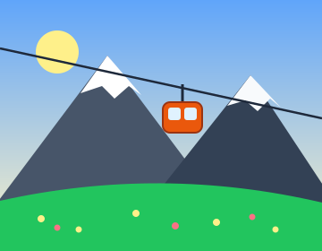
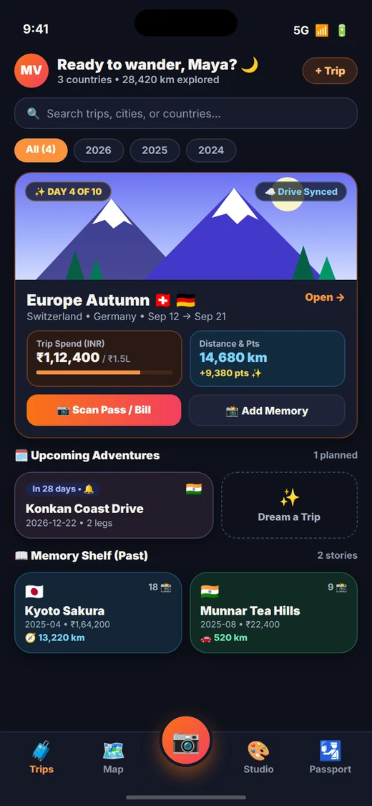

Mt. Pilatus · Sep 15Offline-First Pocket Travelogue · v0.8.3
Trips fade faster than we think — from your first boarding pass to the last sunset photo, Wanderer's Ledger holds your entire journey in one quiet place: private, crafted for day or night, and built to stay with you even at 35,000 feet.
See how one journey comes together — from boarding pass to keepsake.
Share flight PDFs, hotel confirmations, train tickets, or meal bills straight from Gmail or WhatsApp — scanned privately on your phone, even offline.
Your timeline, World Map paths, country passport ink stamps, and private multi-currency spend all organize automatically with zero busywork.
Back up to your own private Google Drive anytime, and turn your favorite memories into a printable Keepsake Magazine or Instagram Story — with every price left out.
Inside the App
Tap any chapter below to see how Wanderer's Ledger handles bookings, private Google Drive backup, geography, multi-currency spend, and the dedicated Studio tab.

Forward multi-page airline e-tickets, hotel vouchers, train tickets, or restaurant receipts straight from Gmail or WhatsApp. Built-in offline scanning reads routes, times, hotel locations, and totals right on your phone — with every field editable before you save.
Appearance · Light & Midnight Dark
Tap the switch below to preview both looks. Whether you're journaling in a sunny café or checking your gate on a red-eye flight, choose Light Mode, Midnight Dark Mode, or match your phone's theme automatically.

Instagram Studio
Turn your favorite trip photos, flight routes, and country stamps into crisp 4:5 feed collages and 9:16 stories — paired with ready-to-paste captions that automatically leave out every price and receipt.

Mt. Pilatus · Sep 15Your entire journal, ticket scanner, 5,333-airport & 249-country directory, flight distance tracker, saved exchange rates, travel reminders, and Studio exports all run right on your phone without needing signal.
Your travel data never passes through our servers. Everything stays completely private on your device — with optional backups stored strictly inside Google Drive's private hidden app folder, complete with Auto Daily Backup, Wi-Fi-only photo uploads, and instant Cloud Delete.
Every Keepsake Magazine PDF, Instagram Studio collage and caption, and 1-tap Family Postcard automatically strips all fares, budgets, hotel costs, and receipt photos.
Early Access · Open Now
Android Closed Beta is open on Google Play right now, and our iOS TestFlight waitlist is open too. Drop your details and we'll send your personal invite link directly.
We're unlocking early access for you — watch your inbox for your private Google Play invite and be among the first travelers inside.
Prefer to browse every screen at your own pace? Download the updated illustrated manual covering Welcome & 1-tap Drive Restore, offline ticket scanning across 5,333 airports, automatic currency conversion, Midnight Dark Mode, private Google Drive backup, and the Studio tab.
Actively Built
Tap any saved receipt in Spend → Peek to inspect the full bill edge-to-edge with pinch & double-tap zoom, drag-to-pan, scanned text view, and 1-tap sharing. Plus 1-tap currency chips on every manual entry screen and an app version readout in Passport.
Cleaner restaurant bill scanning that favors final post-tax Net totals over subtotals and prevents date misreads from flipping currencies. Switch between detected totals in one tap, pick trip currencies or search 44 global currencies live, and get smart prompts on multi-currency trips.
Round-trip itineraries passing through the same hub on different dates now track each stopover separately, with date-aware connecting flights and tap-to-edit Trip Stops.
Choose Light Mode, Dark Mode, or match your phone's theme automatically — crisp in bright daylight and easy on your eyes on night flights. Plus offline support for 5,333 airports, 249 countries, and 988 airlines with automatic passport stamping worldwide.
Back up and restore your entire travelogue (trips, bookings, spend & full photos) straight to Google Drive's private hidden app folder with Auto Daily Backup, Wi-Fi-only photo uploads, 1-tap restore on Welcome, and a dedicated Studio tab for Keepsake PDFs, IG collages & postcards.
Edit any train, bus, ferry, or car booking (with instant Spend sync), filter your World Map by year with quick trip summaries, and enjoy clearer Passport ink stamps.
Graduating from Android Closed Beta to public Play Store launch alongside iOS TestFlight onboarding for waitlist members.
Questions
Have a question or suggestion? Reach out anytime at vg.life.apps@gmail.com.